MODASRIN
Moda hakkında herşey
PARİS MODA HAFTASI
2023 İlkbahar-Yaz koleksiyonlarının sergilendiği moda haftalarında sıra Paris’te. Moda dünyasının kalbinin attığı başkentlerden biri olan Paris’te podyuma çıkan defilelerde yeni sezona dair oldukça cesur detaylar ve elegan görünümleriyle büyüleyen tasarımlar var.DİOR
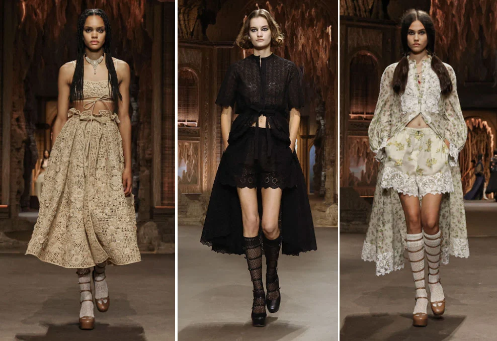 Asırlar sonra iki İtalyan; Maria Grazia Chiuri ve Catherine de’ Medici Paris’te Dior defilesi için bir araya geldi. Chiuri daha önce de tarihten esinlendiği tasarımlarıyla harikalar yaratmıştı şimdi de bu zaman tünelinde kendi yolunu çizmek üzere Dior İlkbahar-Yaz 2023 koleksiyonu için Maison arşivlerinde bulduğu bir Paris haritası görselinden yola çıkıyor ve Fransız topraklarına 1533 yılında ayak basan bu soylu İtalyan, kadın ve güç ilişkisinin sembolik figürü Catherine de’ Medici’nin döneme damga vuran tasarımlarını yeniden yorumluyor. Korse, Burano danteli gibi, yine onun öncülük ettiği ve her biri soylular arasında yayılıp vazgeçilmeze dönüşen icatlardan oluşan yeni koleksiyon da bu Çağdaş zanaat aracılığıyla, eski bir geleneğin günümüze uyarlandığını gözler önüne seriyor. Çiçek ve kuş motifleriyle süslenen rafya paltolar, sanatçı Eva Jospin imzasını taşıyan set tasarımı ile Barok dünyasında buluşuyor. Bu olağanüstü setin kalbinde ise dansçı ve koreograf ikili Imre ve Marne van Opstal’ın hazırladığı büyüleyici bir performans sunuluyor. Feminen gücün çeşitli yüzleri, bu göz alıcı kolektif enerji ile keşfediliyor.Saint Laurent
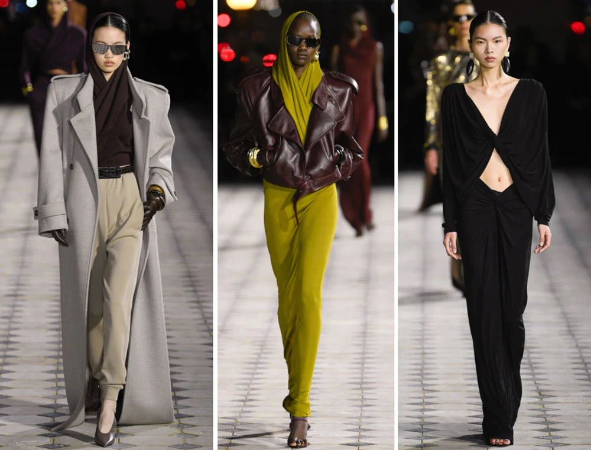 Paris Moda Haftası tüm hızıyla devam ediyor ve Saint Laurent’in her yıl Eyfel Kulesi’nin ışıltılı ışıklarının altında gerçekleştirdiği defile bu sezon da tam bir Paris ruhuna sahip. Markanın doğrudan kendi arşivlerinden ilham aldığı İlkbahar/Yaz 2023 koleksiyonunu özetleyecek bir şey varsa o da Yves Saint Laurent’in 80’lerdeki ‘capuche’ adı verilen şal-kapüşon tasarımının yeniden yorumlanması. Bu dikkat çeken parçalar, 1969’da Claude Lalanne ile iş birliği içinde yapılan şifon elbiselerden, markanın 1985’teki haute couture koleksiyonunun daracık kumaş kapüşonlarından ortaya çıkan arşiv görüntülerinden yeni sezonda en şık haliyle yeniden hayat buluyor.Nina Ricci
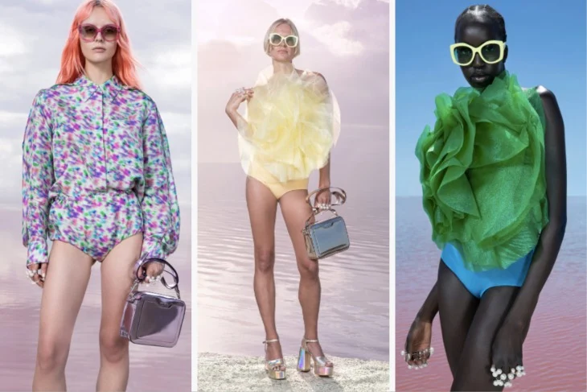 Nina Ricci bir kez daha geçmiş moda izlerini geleceğe taşımaya devam ediyor. Nana Baehr liderliğindeki marka, stüdyonun arşivlerini, özellikle Robert Ricci’nin mitolojiye ve kadınsı kodlara olan hayranlığını, havadar ve eğlenceli bir koleksiyon sunmak için kullanıyor. Markanın bilindik kozayı andıran siluetleri, ilk kez hafif uçuk pembe yünden bir takım elbise ceketi olarak şekilleniyor. Çiçek baskıları bulanık, pastel renk lekeleri ile süslenmiş koleksiyonda dikkat çeken bir diğer detay 3D tül çiçekleri göğsün üzerinde hareket halinde olması.Victoria/Tomas
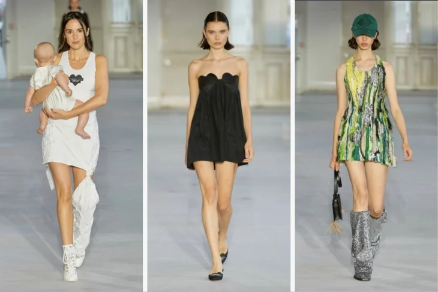 Victoria Feldman ve Tomas Berzins’in 10’uncu yıl dönümü koleksiyonu, sayısız şekilde kendini gösteren kalp logolarıyla tam bir aşk hikayesi. Sokak stiline bir hava katmayı hedefleyen koleksiyonun geçmiş sezonlara göre daha net bir çizgisi mevcut. Düz kesim haki ceketler, kalp şeklinde aplike motifler, önceki koleksiyonların parçalarından yapılan dikey aplike şeritlerle işlenmiş bir dizi mini elbiseler koleksiyonun ön planda olan parçaları arasında.Koché
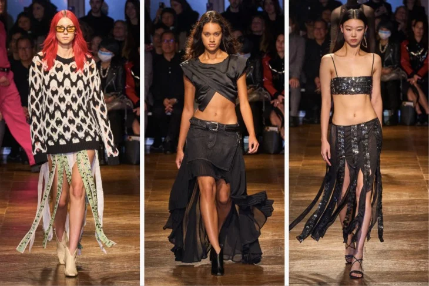 Christelle Kocher Google’un davetini kabul etti ve yeni koleksiyon için Gelişmiş Teknoloji ve Projeler grubuyla bir araya gelip, geleceğe ışık saçan oluşturdukları koleksiyonu modaseverlerle buluşturdu. Kocher’in Google ile ortaklaşa yaptığı dört parça “Binlerce saatlik yenilik ve el işi” gerektiğini gözler önüne seriyor. Yeni jenerasyonla birlikte geleceğe mesaj veren, inovatif tasarımlar ileride moda savaşların bir parçası haline gelecek ki bu sezonda da Kocher bunu karşılıyor.Roland Mouret
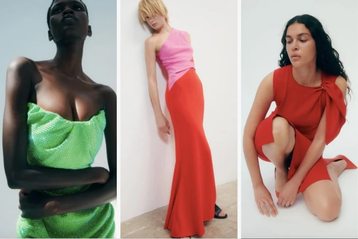 2005 yılında Roland Mouret’in Londra’dan Los Angeles’a kadar uzanan, Victoria Beckham, Sienna Miller, Scarlett Johansson ve daha birçok ünlü isim tarafından giyildiği “galaksi” elbiselerini hayal edin! İşte bu koleksiyonun arkasında yatan fikir tam olarak bu. Tabii tüm koleksiyon bu elbiselerden ibaret değil. Koleksiyondaki yünle kullanılan ipek ve krep kumaşlar dikkat çekerken, kıyafetler önceki sezonlardan çok daha pratik, zamansız ve güçlü kadın profillerini oluşturuyor.Dries Van Noten
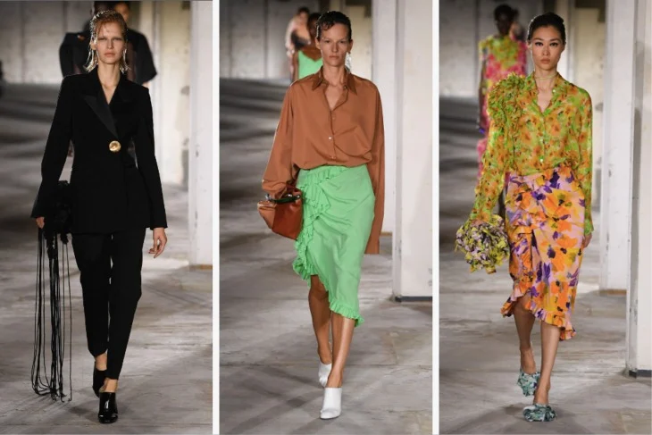 Tohumun muhteşem bir şekilde çiçeğe dönüşmesin şahit olduysanız Dries Van Noten’in yeni koleksiyonunu tam da böyle düşünebilirsiniz! Defileye baştan aşağı simsiyah başlayıp devamında tüm renklerin her bir tonu, çiçek desenlerin en güzel hali izleyenleri büyülemeye değer. Koleksiyon, kadınların ne kadar güçlü durmak için kendilerine bir zırh büründüğünü gösterirken bir yandan da bazı günler gardlarını dindirdiğini ve içlerinde yumuşak, şefkatli bir yüreğe sahip olduğunu gösteriyor. 90’lı yılların ruhuna sahip Dries Van Noten İlkbahar/Yaz 2023 parçalarına bakarken tüm tasarımların gardıropta zamansız bir yer alacağını görüyorsunuz.Balmain
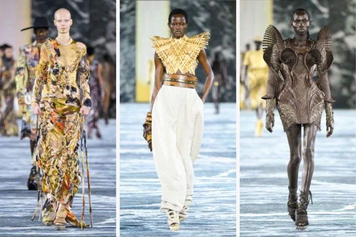 10 yıldan fazla süredir Balmain üzerinden dünya üzerindeki temel değerlere ve olaylara dikkat çekerek her koleksiyonunda büyük ses getiren Olivier Rousteing bu yıl da iklim değişikliği ve küresel ısınma konusunda farkındalık yaratmak için yeni sezon için kendi “Balmain ordusunu” kuruyor.Bu yüzden koleksiyon profesyonel satın almacılardan çok halka hitap ediyor: Kağıttan, ağaç kabuklarından, muz yapraklarında, rafyadan, ahşaptan ve bir dizi geri dönüştürülmüş kumaştan ortaya çıkardığı hazır giyim ve özel tasarım kıyafetler koleksiyonun yankı uyandıran parçaları. Tabii bunlarla birlikte koleksiyonda yeni ve ilginç silüetler de yer alıyor. Özellikle de pijamayı andıran pantolonlar yeni sezonda eşofmana yeni bir lüks alternatif olmaya aday.
Acne Studios
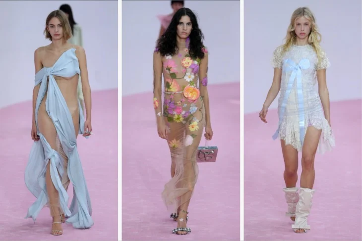 Acne Studios’un yaratıcı direktörü ve kurucu ortağı Jonny Johansson markanın 10. Yıl dönümü için asi ve sempatik; iki zıt karakteri bir araya getiriyor. Kıyafetlerin birçoğu 80’lerden fırlamış gelin ruhunu taşırken, tül- örgü detayları ve büyük fiyonklar koleksiyonun dikkat çeken parçaları arasında yer alıyor.Rochas
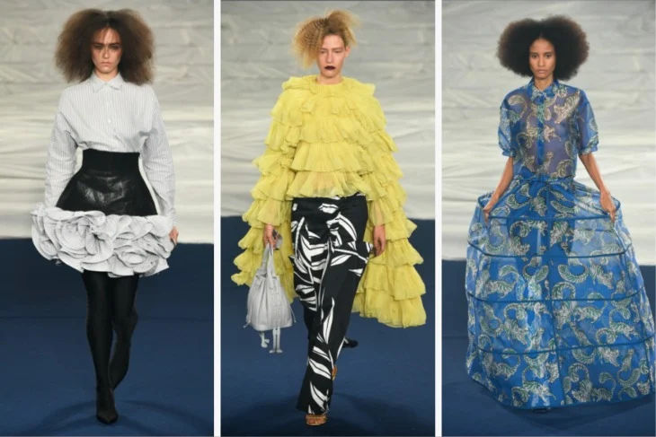 Geçen yıl bu zamanlar Charles de Vilmorin, Rochas’ın kreatif direktörü olarak ilk koleksiyonunu elle boyanmış alev desenli asi bir koleksiyonla modaseverlerle buluşturmuştu. 12 ay sonra halen ilham veren ateş sönmüş değil. Koleksiyondaki parçalar tasarımcının imzası haline gelen simgeleri oluşturuyor: Girdap büyüklüğündeki çizimlerinin yerini grafik baskılar alıyor ve Gotik duyarlılığı romantik fırfırlı elbiseler ve pelerinlerle yer değiştiriyor.Elie Saab
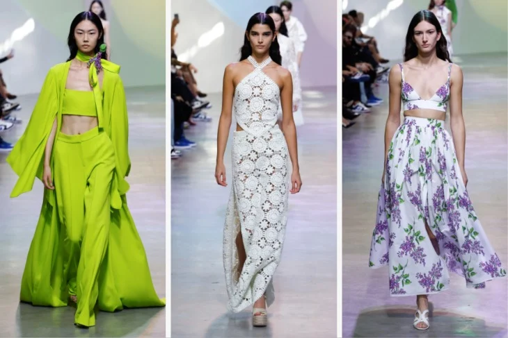 Lübnanlı tasarımcı, bu sezon bahçeden ilham alan bir koleksiyonuyla kumaşta yeni dokular sergiliyor. Elie Saab, bu sezon yeni materyaller kullanarak, mini etekler, ceketler, askılı üstlerde tığ işinin en trend halini buluşturuyor. Ayrıca önleri dantelli ve çiçek aplikeli sweatshirtleri ve bomber ceketleri daha hafifi bir şekilde kullanarak, beyazı, canlı renkleri ve çiçek desenlerini ön planda tutuyor.Andreas Kronthaler – Vivienne Westwood
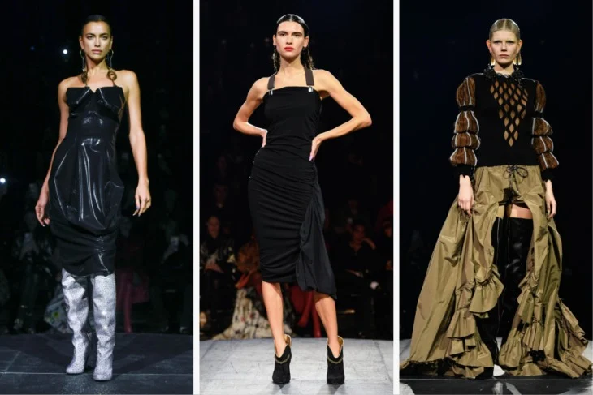 Vivienne Westwood şovunda her zaman politik bir mesajla karşılaşabilirsiniz. Bu sezonda da tasarımcı, İngiltere’deki ekonomik krizi mercek altına alan bir defile gerçekleştiriyor. Tasarımcının kendisi Paris’e defile için seyahat etmek yerine Londra’da gerçekleştirilen “Yeter Yeter” kampanyasının düzenlediği gösteriyi desteklemek için orada kalmayı tercih etti ki bu Vivienne Westwood’un sadece tasarım konusunda değil her konuda ne kadar tutkulu olduğunun kanıtı. Tasarımcının İkinci kocası Andreas Kronthaler tarafından tasarlanan Vivienne Westwood’un 14. koleksiyonun kendisi, 80’lerin retro dokunuşuyla cinsiyet, tarih ve sınıf çizgilerinden ilham alıyor. Genel olarak koleksiyon Doğu Londra kulübü çocuklarının enerjisini, İngiliz moda tarihiyle harmanlıyor. Özellikle Irina Shayk’ın giydiği siyah beyaz elbisenin yanı sıra korse esintili üstler, plaka zırhı andıran takımlar, grup tişörtler, ekoseler, ışıltılı pantolonlar ve örgüler ile göz kamaştıran muhteşem gelinlik vardı koleksiyonun dikkat çeken parçalarından.Balenciaga
 Demna’nın Balenciaga için Paris’te sergilediği gösteri sadece koleksiyonuyla değil çamurlar içindeki seti ve defile öncesindeki davetiyesiyle de konuşulmaya değer. Kanye West sırtında iri bir naylon parka ve dişlerini koruyan lüks bir ağızlıkla podyuma çıkmasıyla defile başka bir boyuta taşındı.
Koleksiyona gelince büyük beden deri ceketler, kasıtlı olarak lekelenmiş açık renkli; arkada yırtıkları olan bol kot pantolonlar ve onlarla eşleşen kadife kapüşonlular yeni sezonda sizi askılarda karşılayacak olan parçalar arasında…
Demna’nın Balenciaga için Paris’te sergilediği gösteri sadece koleksiyonuyla değil çamurlar içindeki seti ve defile öncesindeki davetiyesiyle de konuşulmaya değer. Kanye West sırtında iri bir naylon parka ve dişlerini koruyan lüks bir ağızlıkla podyuma çıkmasıyla defile başka bir boyuta taşındı.
Koleksiyona gelince büyük beden deri ceketler, kasıtlı olarak lekelenmiş açık renkli; arkada yırtıkları olan bol kot pantolonlar ve onlarla eşleşen kadife kapüşonlular yeni sezonda sizi askılarda karşılayacak olan parçalar arasında…